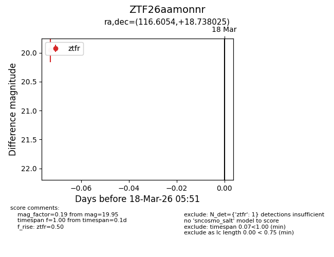
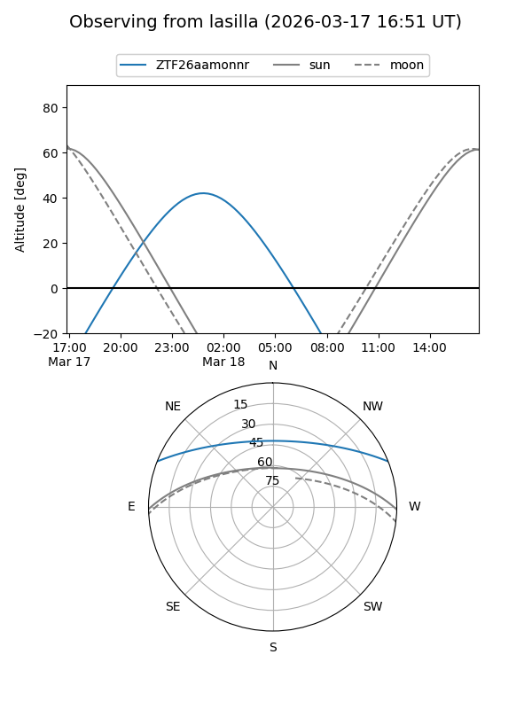
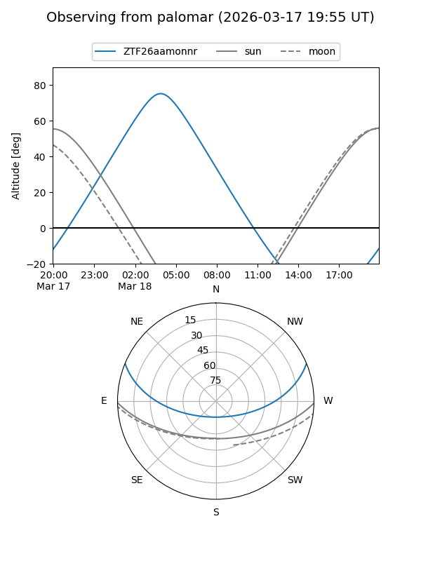

ZTF26aamonnr
Target ZTF26aamonnr at 2026-03-18 05:53
Aliases and brokers:
FINK: link
Lasair: link
ALeRCE: link
alt names
ZTF26aamonnr (ztf,fink_ztf)
Coordinates:
equatorial (ra, dec) = 116.6054,+18.73803
equatorial (HMS+DMS) = 07:46:25.30,+18:44:16.89
galactic (l, b) = (201.6628,+20.28857)
Flags:
Photometry:
last ztfr=19.95
1 ztfr detections
Lightcurve

Visibility


Additional plots